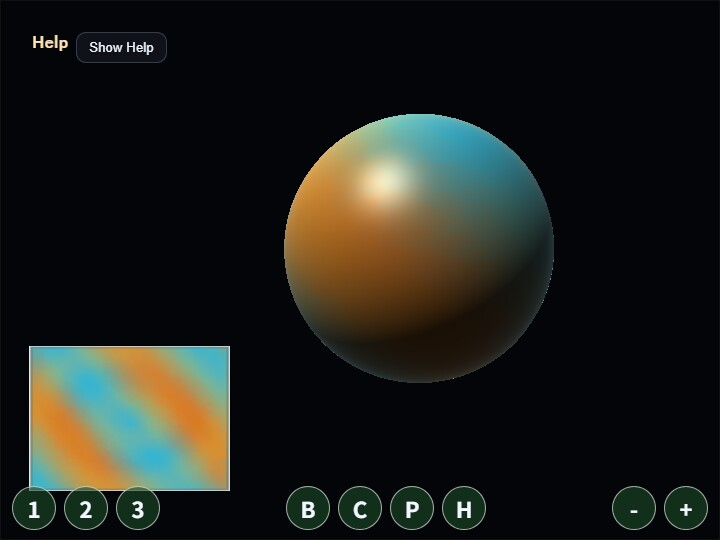

compute_texture
English | 日本語

Overview
- This sample uses a WebGPU compute shader to rewrite the contents of two textures every frame while ping-ponging between them
- Rather than adding a compute-specific API to the
webgcore library, it uses the WebGPUdevice / queue / canvas contextinitialized byWebgAppdirectly inside the sample - The compute pass reads the previous frame's sampled texture and writes the next frame's storage texture by combining diffusion, a flow field, background patterns, pointer input, and a center burst
- The render pass uses the same texture at the same time on the lower-left plane preview and on a sphere mesh created with
Primitive.sphere(), showing the GPU-updated texture on screen without CPU readback - Dragging injects colored seeds at the pointer position, and clicking adds expanding rings of inverted color that gradually grow and fade. The lower-left plane preview makes the correspondence with input position easy to inspect, while the center sphere lets you inspect both the wrapped texture and the lighting appearance
How to Run
- Open ./compute_texture.html
- Use a browser with WebGPU support, and check the help panel and HUD together with the sample when needed
webg Features Used
WebgApp: initializesScreen, diagnostics, and the input foundation togetherWebgAppcompute frame:computeFrame: trueand theonComputeFramehandler skip standard scene drawing and control compute/render orderScreen.resize(): updates the actual canvas pixel size on viewport changes through theScreenheld byWebgAppWebgApp.getGPU(): entry point for building raw WebGPU textures, samplers, and pipelines on the sample side without changing the core APIbuildHelpPanelOptions() + showOverlayPanel(): displays the operation guide and current state in theOverlayPanelhelp panelInputController.installTouchControls(): shows touch buttons for mode switching and clearing on both desktop and smartphones
WebGPU Features Used
sampled texture: used as the input that the compute shader reads from the previous frame's color distributionstorage texture: used as the output into which the compute shader writes the next frame's colorping-pong texture: avoids read/write conflicts by swapping source and destination every frame instead of reading and writing the same texturesampler: reads neighboring pixels and UVs shifted along the flow direction with linear interpolation, generating bleed and flowuniform buffer: passes time,deltaTime, pointer position, mode, brush radius, burst state, and brush color to the shadercompute pipeline: combines previous-frame color, neighboring color, background waves, and input injection with one invocation per pixelrender pipeline: uses the post-compute texture on both the plane preview and the litPrimitive.sphere()mesh, visualizing the rewritten result in two different waystimestamp query: measures GPU Compute time for the texture update plus Render Pass time, then displays per-stage and total load
Checkpoints
- Right after startup, confirm that both the lower-left plane preview and the center sphere already show colored, time-varying flow patterns before any click
- When drawing with drag or one-finger drag, confirm that the plane preview receives color in the same orientation as the pointer position and that even short clicks or taps leave a little injected color before it spreads through the compute shader's flow
- Right after a click or tap, confirm that a ring centered on the input position expands outward while changing color and including color inversion, then becomes thinner over time
- On the sphere side, confirm that the same texture is wrapped onto the
Primitive.sphere()UVs while rotating, and that lighting and highlights make both the roundness of the surface and the texture wrapping easy to read - When switching modes with
1 / 2 / 3, confirm that the color tone and pattern behavior change while the same update structure remains in use - Trigger the center burst with
BorSpaceand confirm that a ring expands from the center of the screen - Press
Cand confirm that the texture is reinitialized and any remaining color history disappears - When
Ppauses the sample, confirm that compute updates stop while the current texture display remains visible - Change brush radius with the mouse wheel or the
- / +buttons and confirm that the injection area changes accordingly - Press
Hto fold theOverlayPanelhelp panel and confirm thatHagain or theShow Helpbutton restores it - Confirm that
GPU compute / GPU render / GPU total / JS timeand their load values update in the help panel
Controls
- Drag: paint color into the texture
- One-finger drag: paint color into the texture
- Mouse wheel: change brush radius
- / +: change brush radius1: Aurora mode2: Ink mode3: Cells modeB / Space: center burstC: clear textureP: pause / resumeH: hide / show help
Implementation Details
- The compute shader in
main.jsseparates the sampled texture as read and the storage texture as write, so the next frame is produced without destroying the previous frame's content - Because the same two textures are swapped every frame in a ping-pong configuration, dynamic texture feedback can continue entirely inside the GPU
- Pointer input passes coordinates, radius, injection energy for afterimages, click-pulse progress, and center coordinates from the CPU to uniforms, while the actual injection range, color inversion, and color addition are judged per pixel in the compute shader
- On the render side, the sphere is drawn by packing
Primitive.sphere()geometry positions, UVs, and indices into raw render-pipeline buffers, reusing the existing UV layout that makes the seam less noticeable - The sphere samples the texture through those UVs and uses directional light, specular, and rim light so the face direction and the wrapping state are easy to read
- The sample can be used as an entry point for dynamic texture generation such as postprocess, reactive HUDs, procedural patterns, and paintable effect maps